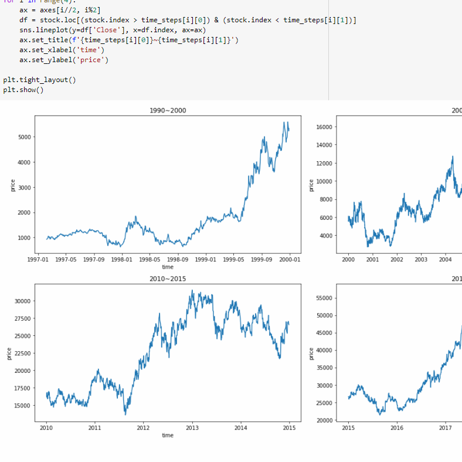
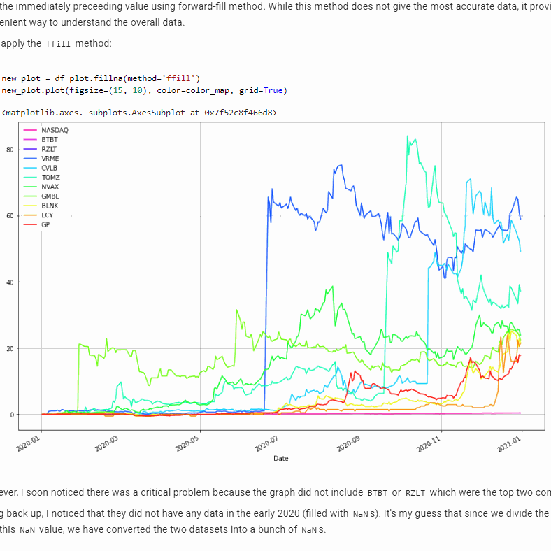
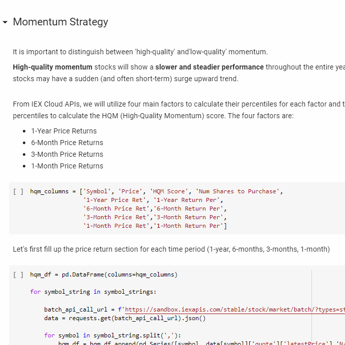
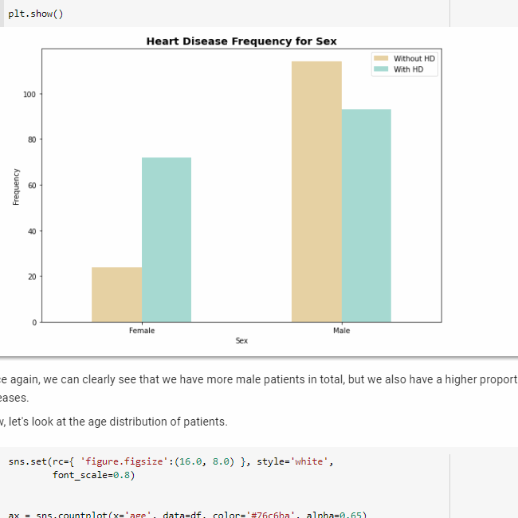
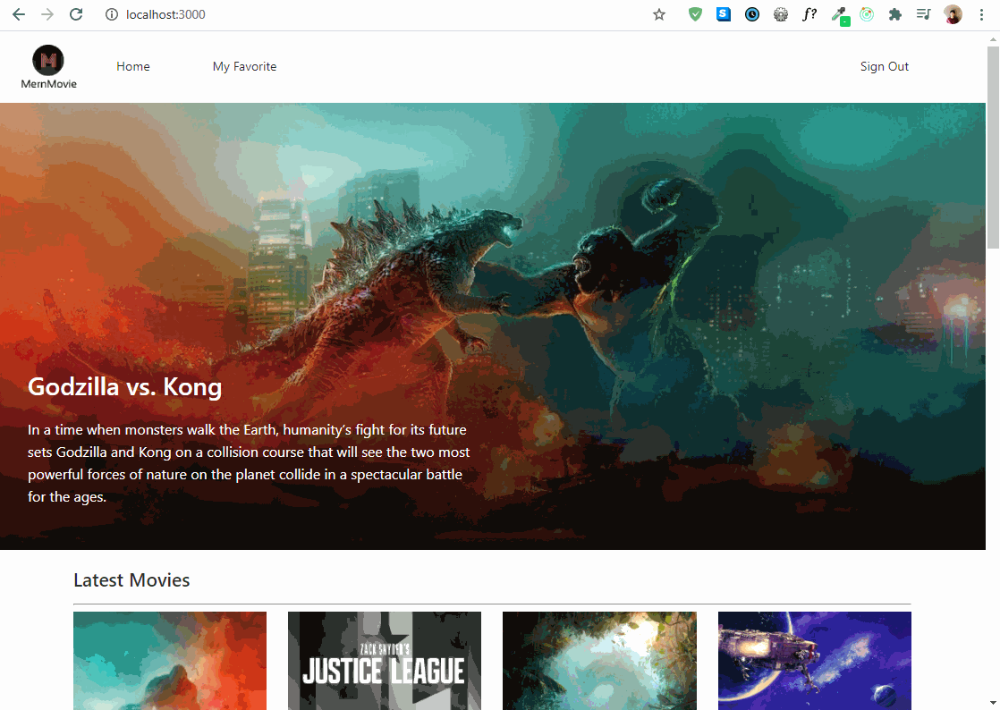

Retinal OCT (Optical Coherence Tomography) Classification
Constructed a CNN (Convolutional Neural Network) model and trained
it on over 83,000 retinal OCT (Optical Coherence Tomography) images
to classify for macular degeneration and diabetic retinopathy.
The trained model was able to achieve over 90% accuracy rate on
the test dataset.
- #python
- #medical_diagnoses
- #deep_learning
- #computer_vision

Personal Facial Recognition
A facial recognition project with three main programs: (1) a
face-capture program that takes a screenshot on every fifth
frame and saves them as 128x128 images; (2) a face-trainging
program that trains a CNN model to recognize a specific human face;
and (3) a face-recognition program that uses the trained and
frozen model to accurately detect and label different human faces.
- #python
- #facial_recognition
- #deep_learning
- #computer_vision

Lane Detection for Autonomous Vehicles
An enhanced lane detection system using computer vision techniques for
autonomous vehicles. The program accurately detects and highlights
lanes for different light conditions (shadows, unclear markings,
etc). Additionally, it calculates and displays curvature and offset
information for the vehicle at every frame.
- #python
- #autonomous_vehicles
- #lane_detection
- #computer_vision

Face Filter
Detects human faces real-time in a webcam feed and applies up to
ten (or more) different snapchat-like filters using the SSD
(Single Shot MultiBox Detector) based neural network. The face
filters are adaptive in that they are able to estimate the size
of the faces and remain proportional and natural when a
user moves closer or farther from the camera.
- #python
- #single_shot_multibox_detector
- #computer_vision

Pneumonia Classification
Built and customized a CNN (Convolutional Neural Network) model
and trained it on over 5,200 patient chest x-ray images to detect
signs of viral and bacterial pneumonia. The trained model was able
to achieve over 89% accuracy rate on the test dataset.
- #python
- #medical_diagnoses
- #deep_learning
- #computer_vision

Handmotion Control
Uses dense optical-flow (Farneback) to allow users to actively
interact with a given camera and control the brightness and/or
the contrast values of each video frame in real time.
Using their hands, users can increase (wave up) or
decrease (wave down) the contrast value and also increase
(wave right) or decrease (wave left) the brightness value.
- #python
- #opencv
- #dense_optical_flow
- #computer_vision

Business Card Text Scanner
Uses edge detection and perspective warping methods to take a
photo, automatically or manually warp the image, and interpret
the text within the image. While the program's primary purpose
is to scan business-cards of standard size (3.5 x 2 inches),
the scanning code can easily be altered to be used in many other
ways.
- #python
- #computer_vision
- #detection
- #perspective_warp
- #tesseract_ocr

Digit Recognition
Accurately recognizes a handwritten digit (0-9) by a user on the
screen provided. It uses HOG (Histogram of Oriented Gradients)
feature descriptors and SVM (Support Vector Machine) model to
identify certain features of a digit and determine the digit based
on the SVM-trained data. A user can write on the screen
with a cursor and press Space bar to submit to the program.
- #python
- #HOG
- #SVM
- #computer_vision

Barcode Decoder
Scans a product's barcode, decodes its manufacturing number to
accurately identify the product, and searches for the exact and/or
similar products online at Coupang (a popular e-commerce website in
South Korea). The program utilizes the requests, beautifulsoup, and
selenium module to make HTML requests and parse the HTML components.
- #python
- #pyzbar
- #computer_vision
- #web_scraping

Bubble Pop: The Caveman
A recreated version of a classic arcade game, "Bubble Trouble
Classic", built with Python and Pygame. The goal of this game
is to help the caveman eliminate all the bouncing bubbles without
getting hit by the bubbles. Starting from a single giant bubble,
each bubble will be split into two smaller bubbles once it gets
popped by a spear.
- #python
- #pygame
- #game_development
- #classic_game

Financial Forecasting with LSTM
Uses a combination of LSTM (Long Short-term Memory) and CNN
(Convolutional Neural Network) to accurately predict a stock's
closing price based on a time-window of 20 business days. The
financial dataset included the last 6,000 data points (open, close,
high, low, change, and volume) for a given stock.
- #python
- #finance
- #long_short_term_memory
- #forecast

Nasdaq Stock Market Analysis
Explores, visualizes, and analyzes the Nasdaq Composite with various
other stock items in the market. The notebook mainly focused on
analyzing stock returns and pair-correlations. The financial dataset
included a total of 3,328 companies and their price dataset (open,
close, high, low, change, and volume).
- #python
- #finance
- #returns
- #correlations

Quantitative Momentum Investing Strategy
Explores, visualizes, and analyzes the Nasdaq Composite with various
other stock items in the market. The notebook mainly focused on
analyzing stock returns and pair-correlations. The financial dataset
included a total of 3,328 companies and their price dataset (open,
close, high, low, change, and volume).
- #python
- #finance
- #momentum
- #investment

Heart Disease Classification Analysis
Utilizes Random Forest Classifier model to effectively determine the
existence of a heart disease using a patient dataset that contains
14 different attributes for 303 different patients. Furthermore, the
notebook explores model analysis techniques like Permutation
Importance, Partial Dependence Plots, and Shapely Additive
Explanations.
- #python
- #machine_learning
- #random_forest_classifier
- #medical

Movie Review Web App
A web app that allows users to see the full list of the latest and
most popular movies. Users can click on movies to view their
specific information like casts, runtime, average rating, and
revenue data. Furthermore, users can choose to 'favorite' certain
movies so that they can easily oragnize and catalog movies they
enjoyed watching.
- #MERN
- #movie_reviews
- #movie_database
- #web_app